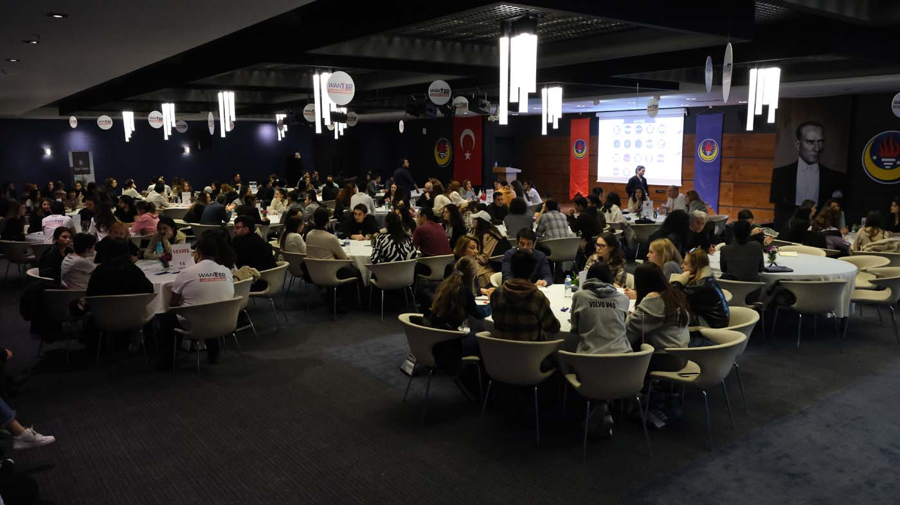

WEF Davos kurumsal protokolü ile Slush'D 5 dakikalık hızlı eşleşme mimarisini TED Üniversitesi kampüsünde birleştiren yeni nesil zirve: 3 akreditasyon çadırı, 10 uzmanlaşmış zone, öğrenci toplulukları köyü, şirket pavilyonları ve 24 numaralı Meeting Point.
Ziya Gökalp Caddesi aksında bağlanan tüm blokları, giriş çadırlarını, Çim Amfi topluluk köyünü, şirket stantlarını ve numaralı Meeting Point masalarını katman bazında inceleyin.
Her giriş çadırı, şirket standı, topluluk çadırı ve numaralı Meeting Point masası tekil QR kimliğine sahiptir.
Rastgele kartvizit alışverişi yerine Slush'ın dünyaca ünlü yapılandırılmış görüşme protokolü: Katılımcılar şirket temsilcilerine, girişim kurucularına veya akranlarına 5 dakikalık görüşme isteği gönderir; kabul edildiği anda sistem G Blok'ta boş bir numaralı masa (MP-01..MP-24) tahsis eder.
Rolünüzü (Öğrenci, İK, Startup, Topluluk) ve yetkinlik etiketlerinizi seçip Davos standartlarında dijital yaka kartınızı oluşturun.
Uygun 5 dakikalık dilimi seçerek istek gönderin. Karşı taraf kabul ettiğinde veya yeni saat önerdiğinde anında ajandanıza işlenir.
Çakışmasız masa motoru G Blok Slush'D Arenası'nda size özel numaralı masayı (ör. MP-04) otomatik olarak kilitler.
Masadaki veya yaka kartındaki QR okutulduğunda 5 dakikalık keskin geri sayım ve tek tıkla CV/profil paylaşımı başlar.
MP-01..MP-16: 5 Dk Hızlı Eşleşme Masaları · MP-17..MP-24: 15 Dk 1:1 Kurumsal Mülakat Kabinleri
Red Zone, Blue Zone ve Promenade stant alanları gün boyu kesintisiz açık kalırken; konferans oturumları 4 ayrı sahnede eşzamanlı ilerler.
Savunma, finans, danışmanlık, enerji, telekomünikasyon ve teknoloji liderleriyle doğrudan kampüste buluşma.
